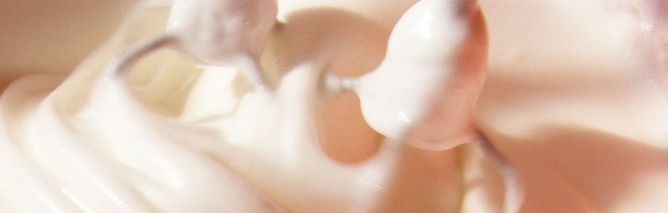

マテリアルスイーツについて
モンブランを主力に伝統の製法を守り、国産の厳選素材だけを使用したスイーツのお店です。 素材については季節により最適な産地の素材を使用しています。今月のおすすめスイーツをパティシェ講座を更新しました。
おすすめスイーツ
今月のおすすめスイーツを紹介します。
パウンドケーキ
素材の卵、バター、薄力粉、砂糖は相性のいい北 海道の産にこだわり作っています。 週末の土日しか販売しない数量限定のスイーツです。
定番スイーツ
国内産の素材にこだわった定番のスイーツを紹介します。
モンブラン
岐阜産の栗を使用した、最も素材にこだわったケ ーキです。

マカロン
静岡産の抹茶のマカロンを季節限定で 販売しています。

ショートケーキ
栃木産の鮮度の良いイチゴを使用したショート ケーキです。
パティシェ講座
今回は家庭で作れるメレンゲ作りを紹介します。
